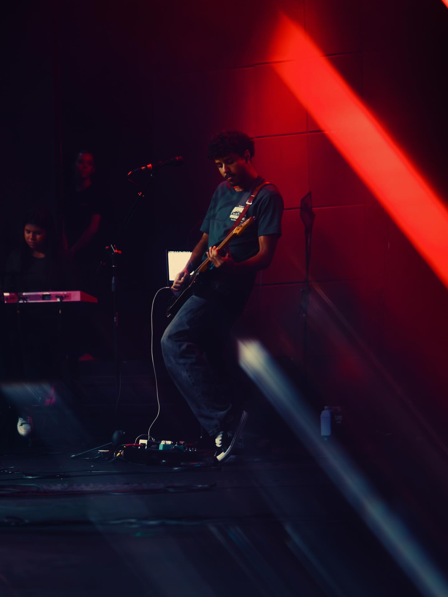
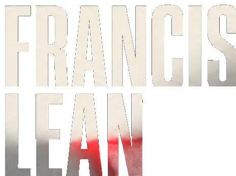
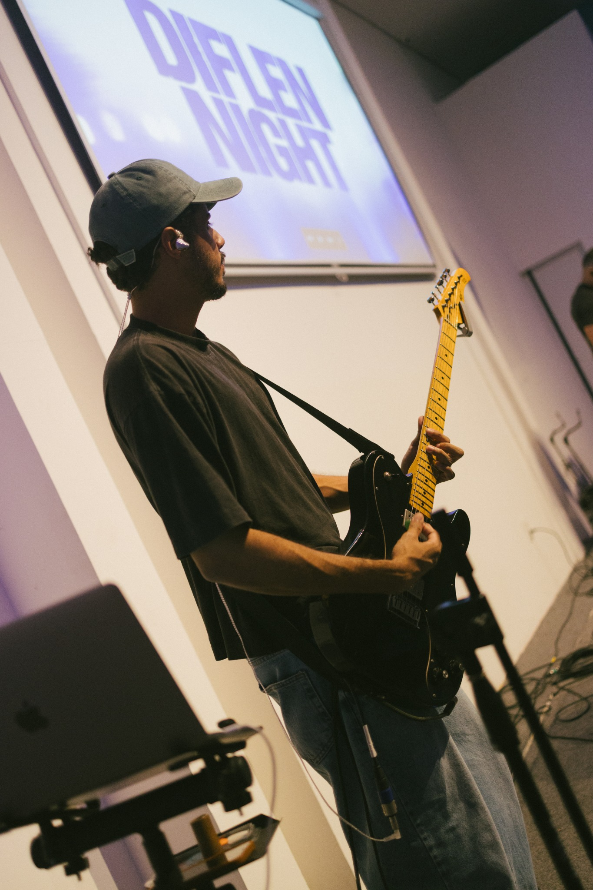

Jardim Fechado
Sara Souza — Gravação das guitarras


Guitarra como instrumento de expressão, fé e conexão. Aulas e gravações com respeito à identidade de cada música.
01Quem sou eu
Sou um jovem cristão e músico de 21 anos. Meus instrumentos principais são guitarra e violão, mas hoje enxergo a música como um “purê de batatas”: ela nasce de uma grande mistura criativa.
Minha jornada começou de um jeito bem comum: aos 13 anos ganhei meu primeiro violão dos meus pais e, desde então, nunca consegui me livrar completamente dele, hahah! De 2018 pra cá, estudei com professores, cursos de guitarristas que admiro e, principalmente, analisando como as músicas de que gosto foram construídas.
Em paralelo, sempre toquei na equipe de louvor da minha igreja, vivenciando vários estilos e desafios que só o palco proporciona. Hoje sou diretor musical da equipe de jovens e adolescentes da Paz Church Fortaleza, lidando com responsabilidades que vão além de tocar meu instrumento.
Guitarra e violão. Online ou presencial em Fortaleza. Do primeiro acorde a quem já toca e quer ir mais longe.
Aprender também precisa ser prazeroso.
Quero compartilhar um pouco daquilo que Deus me entregou, em um ambiente leve onde a prática faça sentido.
Quero fazer aulas ↗Aprender de verdade, sem perder a alegria e a sensação de tocar um instrumento.
Uma formação inicial de aproximadamente seis meses, com liberdade para continuar se aprofundando após este período.
Guitarras / Arranjos / Música

O arranjo começa antes da primeira nota.
Como músico de sessão, minha experiência com direção musical me ensinou a ouvir a canção inteira. Em cada gravação, procuro entender o contexto e construir guitarras que entreguem o que a música pede.
Solicitar gravação ↗Registro de gravação / SoloJardim FechadoAssistir ao vídeo ↗Me conta o que você está planejando.